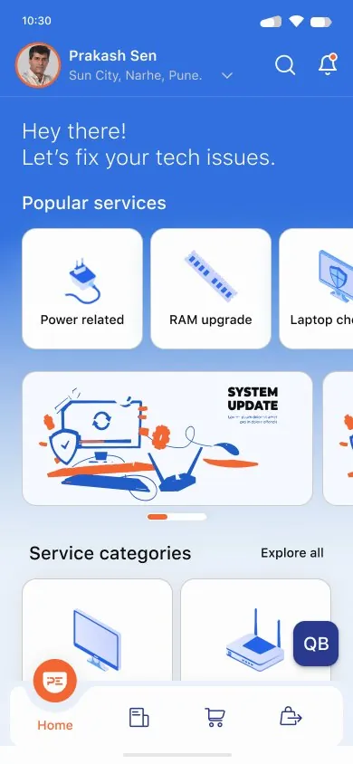
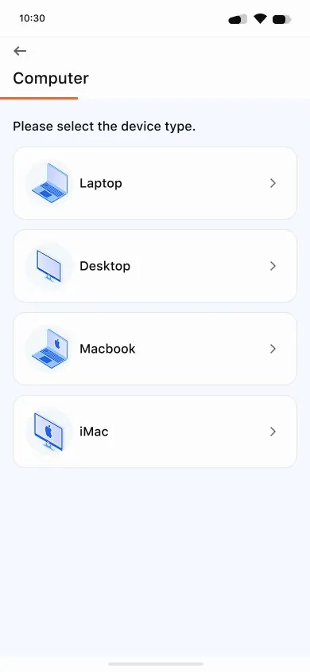
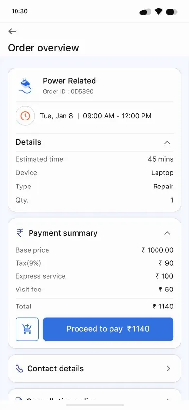
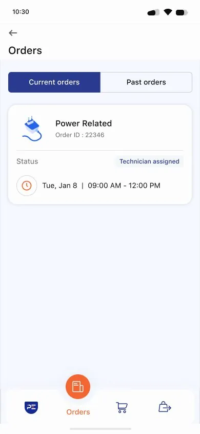
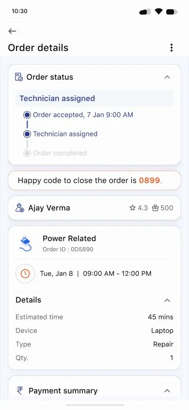
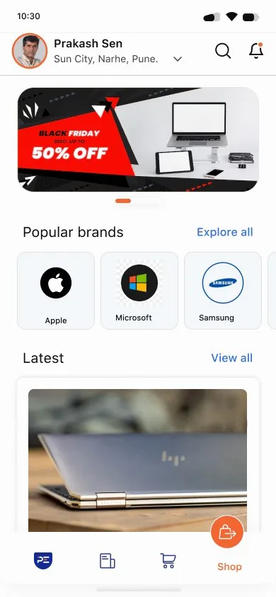
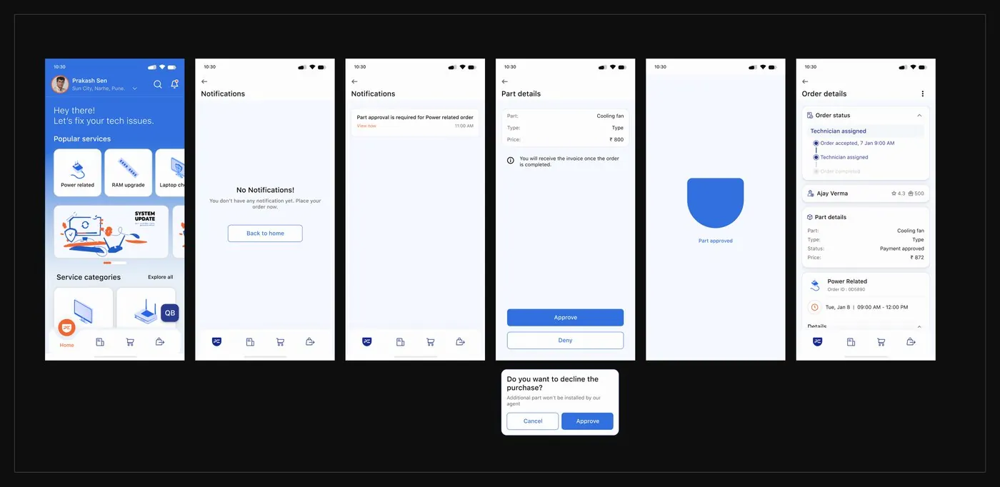
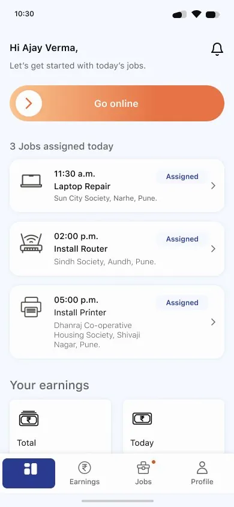
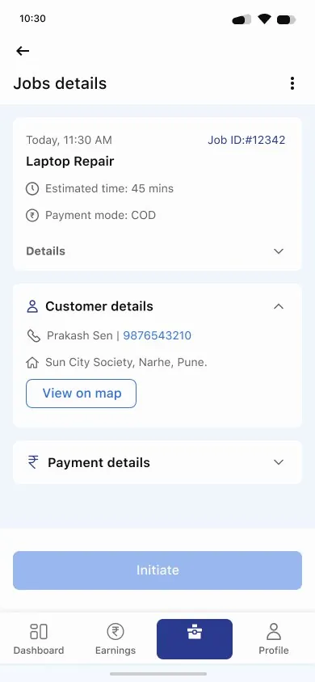

- Says
- “I want my focus to be on teaching, not fixing tech issues.”
- Needs
- Fast, trusted help when the projector or Wi-Fi fails mid-class, at a fair price.
The short version
IT repairs that people can book without knowing what’s wrong.
- Problem Most people can’t describe the fault, don’t know who to call and fear being overcharged.
- Brief One platform to book trusted technicians, track the job and pay fairly, plus an app for technicians to plan their day.
- Outcome The customer app is live with 1,000+ users.
My part I led UX across both apps with one junior designer, from personas and IA to flows, visual direction and the component library.
What made it hard
- Bigger players had more of everything. Better-known competitors already had stronger infrastructure and more budget, so a full-featured app could not win head-on. We were open with the client about that.
- Customers couldn’t name the problem. Many have low tech knowledge, and they worry about being overcharged or misinformed.
- There were two kinds of customer and a technician too. Homes and businesses needed separate service catalogues, and technicians needed their own app for the day’s work.
- Technicians were working with too little. Ajay juggles back-to-back requests across the city, tracks his hours by hand and gets vague descriptions of the problem.
Who we designed for
These five personas shaped most of the calls below.
- Says
- “I need someone I can trust to fix things when they go wrong.”
- Needs
- Low tech knowledge; worries about being overcharged or misinformed.
- Says
- “All I want is a stable Wi-Fi connection that works without constant interruptions, for my kids.”
- Needs
- A router installed with minimal effort and clear communication.
- Context
- Wants transparency from vendors and prompt updates.
- Needs
- Visibility into vendors, prompt updates and fast fixes for his teams.
- Context
- Juggles back-to-back requests across the city and tracks his hours by hand.
- Needs
- Less travel time, no manual tracking, and accurate descriptions before he arrives.
How my thinking changed along the way
Technical names didn’t work for customers
Early IA rounds used technical terms like operating system, utilities, connectivity and peripherals. A note on the board asked the deciding question: “Will the user with low tech knowledge understand these terms?” Personas like Meena would not. So customers now pick their device first (laptop, desktop, MacBook, iMac, printer, Wi-Fi), then a symptom such as “My system is slow”, “Charging issue” or “Not sure of the issue”. The cost is a longer, more granular service list behind the scenes, which the team has to keep mapped to technician skills.
No surprise charges
Fear of being overcharged came up in almost every home persona. So the full price breakdown (base price, tax, express service, visit fee) appears before payment. If a technician needs a new part, the customer gets a notification with the part and price, and approves or denies it in the app. The trade-off is an extra approval step mid-job, which can hold the technician up until the customer responds.
Let the customer close the job
Trust was the core problem, so the customer, not the technician, decides when the job is finished. Each order shows a four-digit happy code, and the technician can only close the job when the customer shares it. The assigned technician’s name, rating and jobs completed are shown too. It adds one more step at the end of every visit.
Build the technician app around the day’s route
Ajay’s pain points were travel time, manual tracking and vague descriptions that waste time on site. Technicians go online with one swipe and see today’s jobs with time, type and address. Each job shows the customer’s issue, contact, payment mode and a “View on map” link, and customers can upload photos of the problem when they book. The trade-off is that customers are asked for more detail while booking.
Ship lean, then grow
From our research, we told the client early why a full-scale app would struggle against better-funded, better-branded competitors. Saying that openly let us agree on a smaller, faster first release: ship a lean app quickly, build the service infrastructure behind it, and expand once it gains traction.
What customers and technicians see
Customer app: from problem to booked



Tracking, trust and approvals




Technician app


What happened after launch
The customer app is live, with 1,000+ users. It shipped as a deliberately lean first version, so the client could set up technicians and operations before investing in more features.
What didn’t go to plan
The design wasn’t the hardest problem. The market was. A full-featured app was never going to win head-on against bigger, better-known players, so we agreed a smaller, faster first release.
Several choices also cost something. The part approval step can hold a technician up, the happy code adds a step to every visit, and customers are asked for more detail when they book. The only post-launch number I have is the 1,000+ users.
What I’d do next
Keep scoping to the budget and the business from day one, because that is part of the design job. A product earns its full version once the basics work, so the plan is to build out the service infrastructure and expand from the lean first release.